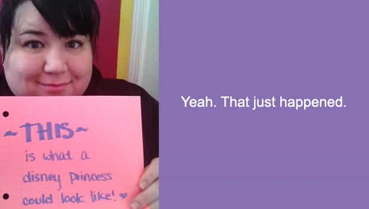

< < < Back
Why Fat Women Should Be Sent To Prison – Return Of Kings
According to a study published in the Journal of the American Medical Association, obese children and adolescents reported significantly lower health-related quality of life in all domains studied. Their lowered quality of life was “similar to children and adolescents diagnosed as having cancer.”
From sleep apnea to diabetes and heart conditions (not to mention being a fucking fat ass), the lowered quality of life and greatly increased health risks for Tubby Tim and Jiggly Jane should be of primary concern. Fat permeates every aspect of these children’s lives, and their bloated BMI is “significantly inversely correlated to their total health scores” including physical functioning, social functioning, and psychosocial functioning.
The Journal of the American Academy of Pediatrics reports that “Maternal obesity [is] the most significant predictor of childhood obesity.” The same report also concludes that children born to fat chicks “have significantly elevated risks of developing obesity, independent of other demographic and socioeconomic factors.”
Tell me how fat chicks aren’t among the worst human beings on the planet. Look me straight in my god-given eyeball and tell me with a straight face how these seacows aren’t a threat to our society and our way of life.
I dare you.
If I were to walk around town with a syringe injecting unsuspecting children with a solution that would severely retard their physical, social, and psychological health leading to a low quality of life and premature death, there’s not a person reading this article who wouldn’t recommend I get the electric chair. I would be a monster – a subhuman social pariah – and you wouldn’t lose a wink of sleep as my rights were stripped away and I was hauled off to jail.
But what if I didn’t use a syringe? What if I used a fork instead? What if I didn’t sneak around to perpetrate my evil plan, but used a double Whopper with cheese instead? What if my main line of defense was that I was “too busy” to not slowly kill children? What if I shamed you for even mentioning what a useless piece of shit I am? What if I said I needed your support and understanding while I continued to slowly degrade the lives of the next generation?
Would you buy it? Would you back off on the insults? Would you make excuses for me? Would you support me as I continued slowly killing our children simply because I don’t have the human decency to say “No dessert for me please.” If all I had to do to save a child’s life was put down the fork and take a 30-minute walk three times a week but I refused to do so – would you rally around in support of my “disease” while I waddled on my merry way? Early indications are that you would *if* I had a vagina and feeeelings.
It’s time to take action. Here are my recommendations:
1. Do not speak to fat chicks
Fat chicks are worse than Jesus when it comes to the destructive force they unleash on the world. Ignore them, and let them know they will not be welcomed into polite society until they reduce their weight to a point to where they are no longer lethal to the next generation. They should be sent straight to prison, and since they’re nothing but animals, we should ignore them like a stray cat.
2. Remind fat chicks that they are (or will become) shitty mothers
This may sound cruel, but you’re really just telling them something they already know. You can do this directly or indirectly as your style dictates, but make sure you get the word out. If you’d warn people about letting their children play in a dangerous construction zone, you are equally morally obligated to warn them about letting their children be birthed and raised by a two-ton tub of Crisco with legs.
3. Always be ready to fat shame (and to defend your fat shaming)
Every man should have this post by Bronan saved in their favorites. Post it on one fat chick’s facebook profile per week for maximum man points. Defending your fat shaming is easy; simply smile and say “Aint it great!” Of course, you need to be ready to run like the wind because some fat chicks are “healthy” and run half-marathons like twice per year lozlzolzolzlzolzlzlzozllzollolzozlzlzol.
But perhaps the second biggest (heh) reason to shame fat chicks – next to doing it for the children – is because according to the American Journal of Thatch’s Musings, fat chicks are 100% likelier to become ardent feminists. Come to think of it, that hurts children too, so shame away.

4. Praise fat chicks after they lose weight
Two weeks ago I saw a coworker who I hadn’t seen in almost a year. She had to have lost 45 lbs or more – which is a massive amount for her tiny frame. Without embarrassing her, I made a pretty big deal of it, and even told her (in a very playful, indirect way and in front of witnesses) that she should call me if things don’t work out with her husband. It made her happy, reinforced her positive behavior change, and got me the evil eye from the two fat chicks who were also in the room. Two birds, one stone: healthy praising and fat shaming are a dynamic duo.
5. Get over your own fat family members, and let the shaming begin
I’m fortunate in that none of my immediate family members are obese. I do have a couple of fat ass chick cousins though, but I don’t let that stop me from calling it like I see it. If you’re reading this and getting pissed because your mom or your sister is fat, let it go man. If this article pisses you off because your wife is fat, then hahahahah…… hahaahah… lozlzollzozlzlzozolzolMcRiblulzlolzoizlzklzlzzl.
Seriously though, if your wife is fat, you suck at life.
Anyway, that’s my thoughts on the subject. For those of you who follow me on twitter, I’ll write up a post about my recent stroke of game luck for next week. Until then, remember that fat shaming is a powerful tool and you should do it for the chrrrrrrldren. Every time you shame a fat chick, you save a child and that makes you a red pill superhero.
Read Next: American Women Simply Can’t Compete